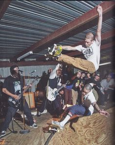

Skate Punk é um estilo de música, sub-gênero do punk rock, ligado à cultura do skate, utilizando comumente referências a ela tanto nos aspectos rítmicos quanto nos temáticos. Sua origem está ligada à marginalização e o estereótipo negativo associado aos skatistas no começo da década de 1980, nos Estados Unidos. Entre as bandas skate punk de destaque estão principalmente: 7 Seconds e Black Flag, mas também Blink 182, The Adolescents, Agent Orange, U.S. Bombs, Circle Jerks, Suicidal Tendencies,[2] Minor Threat, Grinders, The Briefs, Bad Religion, Descendents, e também bandas brasileiras como Atomic Winter, Gritando HC, Neurônios Alucinados, Charlie Brown Jr, Ratos de porão; Porrada Solicitada; Morto pela escola; Deth kids e Bandanos. O skate punk é utilizado com frequência como fundo musical para ambientes de prática do skate e está diretamente relacionado com o punk rock californiano. Uma das principais influências foi a revista estadunidense Thrasher que se tornou o principal veículo da informação no meio, além dos inúmeros fanzines, estes nem tão divulgados ao redor do mundo. No Brasil, as primeiras bandas de skate punk foram o Grinders, o Pakdermes e o Necrópole. Dessa primeira leva, a banda que se destacou foi o Grinders, que participou da coletânea Ataque Sonoro em 1985, lançou um álbum homônimo em 1987 e participou da coletânea Independência ou Morte!. A partir da década de 90 as bandas Charlie Brown Jr, Neurônios Alucinados e Gritando HC se destacaram neste seguimento.
Inspirado pelos Gangster Skateboarders originais de São Francisco e Los Angeles, que apareceram em vários vídeos de skate a partir de meados dos anos 90, realizando linhas de tecnologia simétrica no pier 7, escolas de ensino médio de Los Angeles em bancos de piquenique e locais de sacramento. As seções de skate sempre tinham música hip hop e rap ajustada para o skate, com os truques sendo lançados a tempo das batidas da música. O skate era geralmente técnico e progressivo, as roupas eram geralmente folgadas, muitos dos skatistas eramafro-americanos e hispânicos, e geralmente de famílias pobres que vivem em partes pobres da cidade e em guetos genuínos.